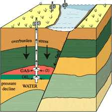

Transportation
Engineer ,Civil
Transportation
Engineer ,Civil
- Assistant Project Manager LA 110, PCH bridge work and drainage projects.
- Value Engineer, developed design alternatives that reduce project costs.
- Developed new alternatives that increased performance by over 10%.
- Assistant Resident Engineer on LA 14 widening-bridge work and traffic flow.
- Lead team of engineers in planning and design process traffic operations.
- As Project Engineer worked on several infrastructure and maintenance projects.
- Won FHWA and AASHTO award for best study 2002.
Geotechnical Engineer
- Developed FEM models for geotechnical and design analysis
- Worked on projects for Sandia National Labs, Chevron, City of Long Beach.
- Wrote winning proposals and engineering reports (e.g. DOE)
- Lead team of engineers on major engineering projects.
Consulting Engineer
- Developed engineering designs and computer analysis for several projects.
- Worked with team of consultants and coordinated their work.
- Managed multiple projects, budgets and programs.
Teaching Assistant
- Designed and investigated water/wastewater facilities
- Supervised work of undergraduate student assistants
1984–1988 B.E.Civil Engineering American Univ. Beirut, Leb.
P.E. Registration #63157 as Civil Engineer Attended training in project management, design, team development, report writing, CAD, Hydraulics.
| Year | Agency | Project and Role | Location | Size |
| 2003 | Caltrans | I-5 Hasley Canyon Interchange, Coordinated work of 15 engineers in a value engineering study. Participated in study that improved design and schedule resulting in improved project performance (25% increase) and reduced original cost by $1 million. Coordinated with county, city and local stakeholders. Resolved drainage issues and erosion control. | LA
 |
$33M |
| 2003 | Caltrans | 101-405 Connector acting VE Study Coordinator. Identified new alternatives and performed field investigations. Coordinated with stakeholders in multiple agencies. Study improved project performance and value. | Sherman Oaks
|
$50M |
| 2002 | Caltrans | LA 14 Widening, Assistant Resident Engineer. Monitored work of engineers and contractor on bridge work and approach slabs. | Acton
|
$40M |
| 2001 | Caltrans | LA 110 and PCH-Assistant Project Manager set schedules, allocated resources for multiple projects in area. Worked also as Acting Project Manager. Used PrimaVera P3, microstation, Hydraulic modelers. | Varied
|
$1-10M |
| 2000 | TTI | Consolidation of Beach Blvd for City of Long Beach. Worked with team to develop soil model and compute surface elevation changes due to oil activities and added loads from aquarium. | Long Beach
 |
$100,000 |
| 1999 | TTI | Coupling of FEM/DEM models for well bores for Chevron Research. Used Abaqus and PFC (Itasca) | La Habra
 |
$50,000 |
| 1998 | TTI | Evaluation of Creep in Salt Caverns. Evaluated design life for use as oil or gas storage. Used FLAC (Itasca). | Oil Storage
 |
$40,000 |
| 1997 | AR&T | Evaluation of Pump designs. Worked with, and lead team, developed new design. Used NASTRAN | Pacific Palisades
|
$120,000 |
| 1996 | AR&T | Evaluation of Pumping Station Efficiencies. I developed engineering software models for analysis and design. | Pacific Palisades.
|
$60,000 |
| 1990 | Caltech | Evaluation of Wastewater Outfall diffusers. Used AutoCAD for design. Custom software for analysis. | Pasadena
|
$100,000 |
| 1987 | SCC
|
Bridges Section in Shropshire County Council (SCC). Developed design for gabion mesh retaining near a river. | England
|
£10,000 |